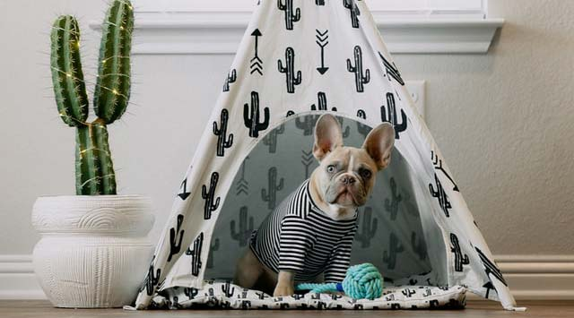
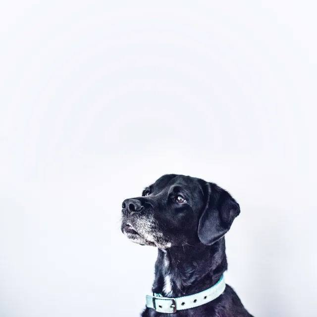

Adopt the
Perfect Pet
Pet adoption is quickly becoming the prerferred
way to find a dog, puppy, cat, or kitten.

Adopt
Find a Pet
Sell

Provide Fostering
Finding home
Pet adoption is quickly becoming the prerfered way
to find a dog, puppy, cat, or kitten.

Marcus
Male, YoungCharles Mondi
Female, AdultSmall Kitty
Female, AdultBrown
Male, YoungAlex III
Male, puppy